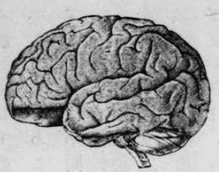
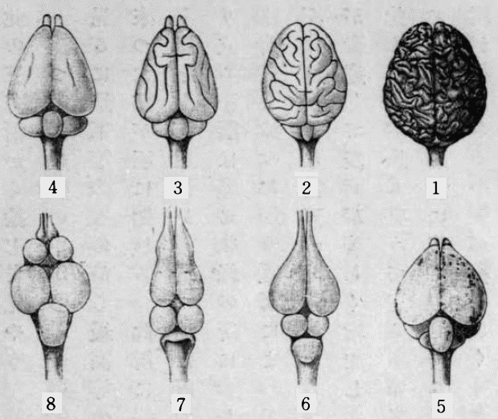
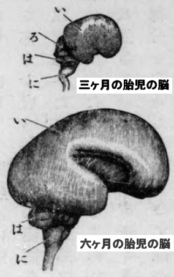
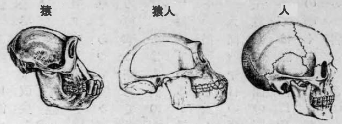

人間の身体の内にある種々の器官は、いずれを取ってもその進化の経路を調べて見て、おもしろくないものはないが、その中でも特に脳髄は物を考える道具であるゆえ、それが今日のありさままでに発達しきたった由来を研究することは、学問を修める人等にとってはきわめて興味もあり、かつ有益なことであろう。ここにはただその大略だけを説いて、それより生ずる考えをひととおり述べるつもりである。
われわれの頭の皮をはぎ去り、頭骨を切り開いて見ると、その中にはおよそ三斤ばかりの、白くて豆腐のごとくに柔いものが充満しているが、これがすなわち脳髄である。その全形は頭部全体の外形と同様にほぼ卵形で、上から見ると縦の深い溝によって左右両半球に分かれ、その表面には全部不規則な凸凹があって、あたかも
蒲鉾状の山と、その間の谷とが複雑に入りまじっているごとくである。さらに後部のやや下面にあたるところを見ると、ここには他と異なって、細かい横皺の重なっている部分があるが、これだけを小脳と名づけ、先の部分を大脳と名づけて区別する。なおその他には延髄というて、脳髄から脊骨の内にある脊髄のほうへ続く途中にあたる小さな部分がある。
かような部分よりなり立った脳髄は、何の働きをする器官であるかというに、大脳は第一に自己の存在を知る意識の作用をつとめるところで、もし頭骨を切り開いて大脳をあらわし、その表面に少しく圧力を加えるか、または頸部の血管を縛って大脳へ行く血液の流れを
暫時止めて、酸素の欠乏を生ぜしめたりすれば、その人はたちまち意識を失うて人事不省のありさまにおちいってしまう。
魔睡薬の働きもこれと同じく、全く大脳の作用を一時止めるにある。かくのごとくにして大脳の働きの止まった人間、または試験のために大脳を切り除いた犬猫などは、あたかも睡眠中のごときありさまで、呼吸、脈搏等はほぼ平常のとおりであるが、ただ意識のみが消え失せて、一種の自働器械となってしまう。なお詳しくいえば、大脳は知、情、意のごときいわゆる精神的の作用をする器官であって、この器官が完全に備わり、かつ完全に働き得る場合においてのみ、かかる精神的作用が十分に現われるのである。小脳の働きについてはいまだことごとく知れぬ点もあるが、従来の実験によると、身体各部の運動を調和一致せしめて、ある一定の目的にかなわしめることである。たとえば、鳩などの頭から小脳のみを取り除くと、意識、知、情、意などは少しも損せず、かつ身体各部の運動の力も存するが、全身の一致調和した整然たる運動は全くできなくなってしまう。また延髄、脊髄は、眼の前へ急に光った物でもくれば知らずして
眼瞼を閉じるごとき、刺激に応じて無意識的に行なういわゆる反射運動の中枢である。

人の脳髄の側面
大脳は知、情、意などのごとき高等なる精神的作用をつかさどる器官なることは今述べたとおりであるが、その中でも特に目立って感ずるのは知力との関係である。種々の動物を集めてその脳髄を調べてみると、知力の進んだものほど大脳もよく発達していることがはなはだ明らかに知れる。また人間だけについていうても全くそのとおりで、無知の野蛮人種と知力の進んだ文明人種とをくらべて見ると文明人のほうがいちじるしく大脳が発達している。医者のほうには「病理が生理を教える」という
諺があるが、実際いずれの方面においても、異常の場合を研究して、始めて平常の状態における関係が明瞭にわかることが往々ある。精神病者を死後に解剖して大脳に病的変化のあったことを見いだし、これによって生前の病の原因を察し得る場合もあるが、特におもしろいのは天然の奇形である。幼児が胎内で発育する途中に、何らかの原因によって、頭骨の成長が早く止まって、大脳もきわめて小さいままで生まれ、他の体部は大きくなっても、頭だけがはなはだ小さい奇形児ができることがあるが、これは天然が行なう実験とも名づくべきもので、その生活状態を調べると、普通の人間の大脳の働きを知るためには大いに参考になる。かような奇形児は十歳になっても二十歳になっても精神の状態はあたかも一歳か二歳の幼児のごとく、知、情、意ともにきわめて程度が低いが、特に知力にいたっては普通人との相違が実にはなはだしい。
猿男とか
狐娘とか名を付けて、時々見せ物に出ているのは多くはかような奇形児である。
以上述べたごとく、われわれの精神的作用なるものはすべて大脳の働きで、特に学問の基なる知力にいたっては、大脳の発達と直接に比例していることが明らかであるが、これから推し考えて見ると、われわれの大脳はいかなる経歴を通過して、今日の程度のものまでに進化しきたったかということを知るのは、何学問を修める者にとってもきわめて必要なことである。特に哲学、倫理、教育、宗教等のごとき主として大脳の力のみをたよりとして研究する種類の学科ではよほどこの点に注意せねばならぬ。大脳は学問の道具とも見なすべき器官であるゆえ、何学問を修める者も、まずその道具なる大脳の歴史を知り、その働きの真価を明らかにしておくことが肝要であるが、前述の諸学科では特にこの事が大切である。もしこの点に注意せず、大脳の働きを絶対に信頼してかかると、たちまち大なる誤りにおちいり種々の空論を考え出して、後世の物笑いとなるに終わるやもしれぬ。
今日生存している動物種属が現在のありさままでに進化しきたった経路はすべて過去の歴史に属するゆえ、実際これを目の前に見ることはもちろんできぬが、人間社会におけると同じく、昔の事蹟を探知し得べき材料は今日なおたくさんに存してあるゆえ、これらを手掛かりとしていくぶんか正確に過去の歴史を知ることができる。たとえば古物や古文書によって古い昔の歴史が知れるごとくに、化石によってずいぶん古代の動物のありさまを知り得ることもある。また現今の口碑、儀式等が歴史研究の参考となるごとくに、現今の動物を比較解剖して、ある動物の進化の経路を知るための材料を獲ることもある。されば今日生物学において、各生物の進化の経路を探り出すための手掛かりは、比較解剖学上の事実、発生学上の事実、化石学上の事実等であるが、脳髄の進化のごときもこの三種類の事実から推し考えれば、大体だけは明らかに知ることができる。小脳その他の脳部のことはしばらくおき、ここには主として知力の器官なる大脳の進化の経路だけをこの三方面から論じてみよう。
まず脊椎動物の中から若干の例を取り出して、その大脳を比較してみるに、最下等のものから最高等の人間にいたるまで、階段的に
漸々進みきたった跡が明らかに知れる。ここに掲げた略図のうち、第１は人間の脳髄の上面を少しく後から斜めに見たところであるが、ほとんど全部が大脳のみから成り立ち、小脳はわずかに後縁のところに少しく現われているだけである。大脳は前にも述べたとおり縦溝によって左右の両半球に分かれ、各半球の表面には複雑な雲形の凸凹がある。これは大脳の中で最も重要な皮質部が発達して、表面がいちじるしく増加した結果で、有名な学者の脳髄などではこの凸凹が最も整うている。第２は猿の脳髄であるが、これは大体においては人間の脳髄によく似ている
［＃「似ている」は底本では「以ている」］。その相違の点は脳髄全体に対して大脳がやや小さく、小脳がやや大きく、かつ大脳の表面の凸凹がいくぶんか簡単なことである。第３は犬の脳髄で、これでは小脳がほとんど全部現われ、大脳は猿に比してなお一段小さく、かつ表面の凸凹も少しく簡単になり、その前端には新たに一対の小さな突起が現われている。この突起は
嗅神経葉と名づけるもので、鼻へゆく神経の基であるが、この部は人間や猿では大脳の下に隠れてあるゆえ、上面からは見えぬ。第４の兎の脳髄は、大体は犬のに似てはいるが、大脳がさらにいっそう小さく、その表面にはほとんど凸凹がなく、ほぼ平滑になって、人間や猿のにくらべると、外観上いちじるしく相違して見える。第５は鶏の脳髄であるが、大脳や小脳はよほど兎のに近い、しかしながら大脳の後に一対の丸い部分が新たに現われた。これは視神経葉というて眼にゆく神経の基である。人間、猿、犬、兎等のごとき獣類にもこの部は存在してあるが、大脳と小脳との間に隠れているゆえ、大脳と小脳との間を押し開いてのぞかなければ見えぬ。鶏ではこの部が特に発達しているというよりも、他の部分特に大脳の発達の程度がやや低くて、この部をおおい隠すに足りぬゆえ、外面に現われているのである。第６は
鰐の脳髄で、大脳は鶏よりもなお小さく、視神経葉はいちじるしく現われている。第７の蛙の脳髄では大脳はさらに小さく、その両半はおのおの前なる嗅神経葉と縦につづいて、あたかも細い
瓢箪を二つならべたごとき形を呈しているが、この瓢箪の前半は嗅神経葉で、後半のみが大脳である。また全脳髄に対しては視神経葉がいちじるしく大きく、その後にあたる小脳ははなはだ発達の程度が低い。最後の第８図に示してある魚類の脳髄にいたっては大脳がはなはだ小さいために、初めてこれを見る人はいずれが大脳であるか識別に苦しむくらいである。脳髄の中ほどにあって、大部分を占めている一対の丸い塊は、ちょっと見るとあたかも大脳であるかのごとくに思われるが、実はこれが視神経葉であって、その前に並んでいるやや小さい一対の球のほうが真の大脳である。なおその後にある一個の大塊は小脳であるが、かくのごとく、名は大脳、小脳とつけてあっても、魚類などでは小脳のほうがはるかに大脳よりは大きい。以上略図について説明したとおり、脊椎動物の中からいくつかの例を選り出して比較して見ると、大脳の発達の程度にはたくさんの階段があって、これをならべて通覧すれば、一端より他端まで漸々進化しきたった経路がほぼ明瞭に知れる。ここに断わっておくべきことは、以上の略図は全脳髄の大きさに対する大脳の発達の程度を示すために、何動物の脳髄をも同じ大きさになおして画いたが、実際においてはむろん高等の動物ほど脳髄の大きさも大きく、人間では脳髄の量が体重の四十分の一くらいもあるに、
鰤や
鮪では体重の一万分の一にも足らぬほどゆえ、大脳の絶対の大きさの相違は、ここに掲げた図よりはさらに数倍も数十倍もはなはだしいのである。

脊椎動物脳髄比較
１．人間 ２．猿 ３．犬 ４．兎
５．鶏 ６．鰐 ７．蛙 ８．魚類
以上は脊椎動物の大脳の発達に無数の階段のある中から便宜上ただ若干のものを選み出して互いに比較しただけであるが、その中の下等に位するものは、どのくらいの知力を有するかを示すために一例をあげれば、次のごとき実験がある。ヨーロッパには
鱸に似た河魚で、小さな魚類を貪食する種類があるが、ある人がこの魚を水族箱に入れて養い、箱の中央へ一枚のガラス板を入れて仕切りを造り、他の側へつねにこの魚の餌となる小魚類を放ったところが、最初は透明なガラス板のあることには気が付かず、小魚を捕え食おうとしては、ガラス板に鼻を打ち付け、また食おうとしては、またガラス板に鼻を打ち付け、数日間かようのことの続いた後には、もはや小魚を捕えようと試みぬようになってしもうた。この時にいたって中間のガラス板を取り除いたところが、かの魚には小魚を捕えることと、鼻の痛いこととの結合した印象が脳中にのこっていたものと見え、あたかもかの小魚は鼻の痛くなるものであると覚え込んだかのごとくに、顔の前へ小魚が
游いできてもこれを捕えようとはしなかった。今日は下等動物の心理や、習性を研究することが大分盛んになり、米国などでは、特にそのための専門雑誌が発行せられるまでに進んで、この方面の知識もよほど増して来たが、それらの研究によると、
如何なる下等動物にも、なおいくぶんかの知力のあることは確かで、ここに述べた魚類のごときも、その知力、推理力ははなはだ低いが、われわれのにくらべれば、ただ程度がいちじるしく低いというだけで、性質においてはほぼ同一である。他の例をあげることは略するが、いずれの動物でも大脳の働き具合はみな単に進歩の程度に相違があるに過ぎぬ。

人脳発生図
い 大脳
ろ 視神経葉
は 小脳
に 延髄
次に胎内における人間の脳髄の発生の順序を見るに、比較解剖の結果とほぼ同様な事実を見いだすことができる。人間の脳髄は胎内発生の初期より成人になるまでの間に
漸々発達するものゆえ、これにも無数の階段があるが、今その中から便宜上、ほぼ前に掲げた比較解剖図にあるものに相当すると思われる若干の階段を選み出し、発育の程度に従うて、前とは順序を
倒にして、まず最も発達の低いほうから説明してみるに、受胎後およそ三週間くらいの胎児では、全脳髄の中で視神経葉にあたる部分のみが非常に大きく、その前に二つ並んである大脳両半球の始まりははるかにこれより小さいから、ほとんど魚類の脳髄と同程度にあるというてよろしかろう。次に五週間くらいになると、大脳の発達が、他の脳部よりもやや速いために脳髄全体に対する大脳の大きさがいちじるしく進んで、ほぼ蛙の脳髄におけると同じ程度に達する。八週間すなわち二ヵ月くらいになると大脳がさらに大きくなって、大脳、小脳、視神経葉等の割合がほぼ
鰐の脳髄におけると相匹敵する。なお進んで三ヵ月から五ヵ月の間にいたれば大脳の発達の程度は鶏もしくは兎の階段に相当し、大脳はすでに全脳髄中の最も大なる部分となり、その後にはやや小なる小脳を備え、二者の間からはなお視神経葉が現われている。ただしこのころまでは大脳の表面は全く平滑で少しも凸凹の
褶がないが、これからおいおい大脳の皮質部が比較的速かに発達して、そのため表面に凸凹が生じ、六ヵ月を過ぎ七ヵ月ともなれば、大脳の表面にはほとんど犬と比較すべき程度の褶が見え、八ヵ月では全く猿と同じくらいのありさままでに進んでくる。かく大脳が発達する間には他の脳部ももとより成長してはいるが、その成長の速度が大脳に比してはるかに劣るゆえ、視神経葉のごときは早く大脳の陰に隠れて見えなくなり、小脳も
漸々比較的小なる部分となって、ついに人間固有の脳髄の形状をなすにいたるのである。
以上述べたごとく、人間の大脳なるものは決して最初から今日のごときありさまにできたものではなく、初めは脳髄の中でもはなはだ小さい部分をなすに過ぎなかったものが、
漸々進化してついにわれわれの見る通り、全脳髄の大部分を占めるほどに大きくなったものなることは比較解剖学上からいうても、発生学上からいうても、
真らしいことである。また化石のほうを調べてみても、先年オランダ領インドで発見せられた「猿人」（
Pithecanthropus）という猿と人間との中間に位する動物では、脳髄のはいるべき頭骨内の腔所の広さがほぼ猿と人間との中間くらいであり、また古い石器時代の人間の遺骨を調べて見ても、脳髄のあるべき頭骨内の腔所が今日の人間にくらべるとはるかに狭いことなどから考えると、大脳の
漸々進化しきたったものなることは、これらの三組の事実のことごとく証明するところで、もはや決して疑うことはできぬ。

人と猿人との頭骨比較
さて生物の身体における各器官が
漸々進化するのは何によるかといえば、これは主として自然
淘汰の働きによることで、生存に必要な器官の最もよく発達したものが、代々生き残って子孫をのこした結果、ついに今日の域までに進みきたったのである。してみると、大脳とても、胃、腸、肺、肝等のごとき他の臓腑と同じく、生存競争に加わり得る程度までにより進んではおらぬわけで、日常普通の生活には間に合うが、決して絶対に完全のものと見なすことはできぬ。全体自然界には、どこを見渡してももはや少しも改良を施すべき余地がないというような絶対の完全ということは決してない。すでにダーウィンも言うたとおり、自然界においては「競争すべき相手と同等か、あるいは少しくそれに優る」ということが「完全」の標準であって、われわれが自然物のある性質を完全なりと評するのはつねにこの標準に照らして言うことである。今日生存しているすべての動物にくらべては人間の大脳が最も発達し、人間の知力が最も進んでいることはむろんであるが、もはや進化の極点に達して、これ以上には働きが進むことのできぬというほどに発達し終わったものでは決してない。
人間の今日の脳髄が絶対に完全なものでないという証拠は、少しく注意して人間の所行を観察すれば、ほとんど無限に見いだすことができる。夢ではずいぶんはなはだしい不合理なことも少しも疑わずに、単に
当前のことのごとくに感ずるものであるが、広く世間を見渡せば、昼間立派に目の覚めておるときにも、きわめて不合理なことを平気で信じている人もはなはだ多い。未開の野蛮人はしばらくおいて、文明開化に誇る欧米地方においてもばかげた迷信ほどこれを確信する人が多いような傾きが見えるが、かように一方の人がたしかに迷信と思うことを他の人は堅く信じて疑わぬということも、脳髄がいまだ発達し終わったものでないという明らかな証拠の一つであろう。哲学者は初めから自分の脳力だけは絶対に完全であるものと認定し、思弁的に宇宙の真理を看破しつくそうと頸をひねって、大脳の発育変遷というごときことには全く心付きもせぬようであるが、諸動物の大脳を比較し、人間の大脳の進化の経路を探り求め、これに照らして人類全体を総括し考えてみると、無智の迷信者も、有名な哲学者も、実は五十歩百歩の間柄で、その間にいちじるしい相違があるには違いないが、同一の先祖から起こって、同一の方向に進みきたり、なお今後もさらに先へ進もうとする途中にあることゆえ、絶対に完全なものでないという点においてはいずれも同じである。
いかなる器官でも生存競争の必要上、ある点まで発達すれば、その本来の目的に向こうて用いるほかに、
副弐的の目的のためにも用いることができる。一の器官がある働きをなすためには、これをなし得るだけの一定の構造がそなわらねばならぬが、一定の構造がそなわってある以上は、この構造をもってなし得べき他の働きをもなすことができる。たとえば
味噌を
摺るためには
摺子木は棒の形を有することが必要であるが、棒の形を有しておる以上は、これを一種の棒として犬の頭を打つために用いることもできる。また風を起こすためには
団扇は扁平でなければならぬが、扁平である以上はこれを一種の薄板として
蠅をたたくために用いることができる。人間の大脳もこれと同様で、生存競争上、容易に敵に負けぬだけの策略を考え、また容易に同僚にだまされぬだけに用心をなし得る程度までに思考力が発達してきたのであるが、いったんこの程度までに思考し得るだけの仕掛けが大脳内にできあがった以上は、これを日常の生活以外の方面に向こうて用いることができる。従来の哲学とか宗教とかいうものは主としてかかる性質のもので、思考力をその本来の目的なる生存競争より以外の方面に用いておるのであるから、あたかも
摺子木で犬を打ち、
団扇で蠅をたたいておるごとき関係のものであろう。この心得をもって、従来の哲学や宗教をとりあつかえば、決して迷い込むにいたらずしてしかも十分にその実際を研究することができようかと思う。
前に述べたとおり、われわれ人間は古い昔に脊椎動物の共同の先祖より起こり、魚類、蛙、鰐、鶏、兎、犬、猿等のごとき大脳を備えた時代を通り越し、知力もこれと同じ順序に進みきたって、ついに今日のごとき最も発達した大脳と、他に比類なき知力とを有する程度までに到着した次第であって、その間にわれわれの先祖はおのおのその時代にしたがい、あるいは魚類、あるいは蛙類、ないしは犬類または猿類を相手として、はげしき生存競争をなし、ついに知力によって、これらの敵に打ち勝ち、もはや天下に恐るべき敵なき全盛の域に達して、今日ではもっぱら知力を用いて相互に
呑噬を
逞うするよりほかなき境遇にいたったのである。換言すればわれわれの今日有する大脳は長い歴史の結果であって、いつもその時代の生存競争に必要な程度までに発達し、つねに先へ先へと進んできたのである。
なお考えねばならぬのは、大脳の働きが外界からの影響をこうむっていちじるしく変わることである。たとえば
酒精を含んだ飲料を用いると知、情、意ともにたちまち調子が変わって、つねに静かな人も盛んに騒ぎ出し、無口の人も急にしゃべるようになり、あるいは泣きあるいは怒って一時はあたかも狂気のごとくに見える。されば酒は昔から「気違い水」とも名づけきたったが、脳の働きの調子を狂わせるものは酒のほかにもなおたくさんにある。気違い
茄子と名づける果実のごときもこれを食えば、一時全く狂気のごとくになって、全家こぞって
神輿をかついで村中を駆けまわったなどという例もある。特におもしろいのは亜酸化窒素と称するガスで、これを吸うと、
如何なる人もたちまち陽気に浮かれだして、きわめてご機嫌がよくなるゆえ、一名これを「笑いガス」とも呼ぶ。もし
釈迦の呼吸した雪山の空気の中にこのガスの
若干量が混じていたならば、仏教もよほど異なったものができたかもしれず、もしショペンハウエルの部屋の空気の中に少しくこのガスをまじえておいたならば、彼の哲学も全く
根柢から違うたものとなったかもしれぬ。つまるところ、人間の大脳は、酸素二分と窒素八分との混じた普通の空気を呼吸し、従来食いなれた普通の食物を消化しながら、生存競争をしてゆくのに役に立つだけにできているものゆえ、これと異なった状態におけば、自然その働きに変調を生ずる次第である。その他、腹がへればいかなる食物も美味に感じ、久しく独身でいた若者には大概の醜婦も美人に見えるなど、身体上の関係から気分に変化を生ずることもあり、また病気によってはあるいはわがままとなり、あるいは
憂欝となって、その日その日の思想にいちじるしい影響をおよぼすことなどはつねに人の知るとおりであるが、これらを見ても大脳の働きは、種々の事情によって絶えず動かされていることが明らかに知れる。
さらに考えねばならぬのは、神経系の働きは意識に現われた知、情、意の作用のほかにもなお存することである。刺激に応じて、ただちに無意識的に働く反射運動のことは前に述べたが、動物には別に本能という働きがあって、あたかも知力によって考え出したかと思われるごとき手段を用いて、目的を知らずに目的にかのうた働きをする。たとえば蝶類がその幼虫の餌となる植物の葉に卵を産みつけ、蚕が
蛹となる前にまず繭を造ってそのうちに隠れるごときはすなわち本能の働きであるが、これらは一生涯にただ一回よりせぬことゆえ、前もって
稽古するわけでもなく、他を見習うて真似するのでもない。生まれながらにして、かくなさずにはおられぬ性質を備えておるのである。下等動物を調べてみると、本能の働きには驚くべきものがはなはだしく多くあり、中には実に不思議に堪えぬものもあるが、知力の進んだ動物では本能は
漸々少なくなり、知力の最も発達した人間にいたれば、本能はただわずかに生まれてただちに乳を求めて吸うことと、一定の年ごろになると異性を求めて相接せずにはおられぬこととの二つだけにとどまる。この二つはたれが教えずとも、たれに習わずとも生まれながらになし得ることで、かつなさずには我慢ができぬ。かく動物の種類によって、本能の働く範囲に広い狭いの相違はあるが、いずれにしても生長して子をのこし、自己の種属を維持するという目的にかのうたことばかりで、その以外に出るものはない。これより推して考えると、知力も本能も反射運動も、みな同一の目的のために働く神経作用の異なった方面に過ぎず、ともに働いて種属の維持につとめているのである。人間は昔から絶えず知力を武器として競争しきたったゆえ、知力は盛んに発達したが、本能のほうはかえって簡単な程度にとどまり、昆虫などではこれに反し、本能の発達
如何によって直ちに生存競争における勝敗が決するゆえ、本能がますます進んでついにわれわれからは不思議と思われる程度までに達した。されば知力といい本能というも、ともに種属の維持を目的とする働きであって、いずれも自然淘汰によって、今日の生存に必要な程度までに進みきたったとすれば、その中の一方の働きの発達した動物に、他のほうの働きのあまり発達しておらぬ理由もほぼ了解することができよう。神経系の働きには意識に現われる部と意識に現われぬ部とがあるが、知力は単に意識に現われる働きの中の一部分に過ぎぬ。ただ人間では脳髄の中で大脳のみが大きくなって他の脳部をおおい隠すとおりに、知力のみが特に発達してそのため他の働きはかげに隠れ、ほとんどなきがごとき感を生ずるにいたったのである。
以上述べきたったごとく、人間の知力の道具なる大脳は、決して最初から今日のとおりにできたものではなく、人類の進化とともに一歩ずつ進んでついに現在の程度までに発達しきたったのである。それゆえ、その働く力も他の胃、腸、肺、肝等の臓腑と同じく、普通の状態のもとにあって、生存競争に加わり得る程度を限りとしてその以上には出ない。しかして平常に異なった状態のもとにおけば、この働きに変調が起こる。これらのことは知力によって事物を研究せんとする人々の一刻も忘れてはならぬところで、これを忘れると、知らずしらず空論に深入りしてついには誤りにおちいりやすい。人間の大脳の進化は前に述べたとおりであるが、今日の生存競争の状況に鑑みて、未来を推し測れば、今後ともなおますます進むものと断言せねばならぬが、大脳のさらに発達した世の中から今日のありさまをかえりみたならば、今日大学者の論ずることも、あるいは小児の
戯言のごとくに見えるやもしれぬ。かく考えると他人の主張する理論を聞いて、いかにもっともらしく感じても、これをもって永久不変の真理と信ずることもできなくなり、また自分がいかにもっともらしい理屈を考えだしても、これをもって万世不易の真理と唱えることもできなくなり、すべて脳力にて理を推し考える場合にはきわめて慎重な態度を取って、推理の一段ごとに、実際に照らして調査するゆえ、はなはだしい誤謬におちいるのを避けることができよう。もっともいかなる学科でも、直ちに実験で証明することのできぬような仮の学説も必要であるが、これはあたかも燈火で照らされた明るいところと、全く光の達せぬ暗黒なところとの中間にある半明半暗のあたりを半ば想像によって説明を試みているごときもので、むろん不完全には違いないが、将来の研究の方針を定めるにあたっては大いに参考となり、したごうて学問の進歩を速かならしめるためにはなはだ有効なものである。かかる仮の学説は論者の見るところの異なるにしたがい、同一の問題に対して幾とおりも異なったものが考え出され、
暫時は互いに相戦うごときこともあるが、確実な知識の範囲が広がるに伴うて、前に半明のところも後には全く明るくなり、学説間の争いはたちまちいずれにか決着してしまい、決していつまでも数多の学説が並び存するというようなことはない。人間の推理力をこのくらいの程度に用いることはいずれの学問においても有効で、かつ必要であるが、この程度を超えて、経験にも実際にもはなはだ遠ざかったところまで、単に推理力のみに依頼して考えつくそうとすれば、その結果は必ず大なる誤謬におわるであろう。もし単に沈思黙考して先から先へと理を推し考えた末に、宇宙の真理をことごとく悟りつくしたかのごとき感じが起こったならば、その時はすでに自分の精神にいくぶんか異常を呈しかかったものと見なして注意するがよろしい。脳髄の進化ということをつねに忘れぬ者は決してかかる状態におちいるおそれはないはずである。
（明治三十九年二月）